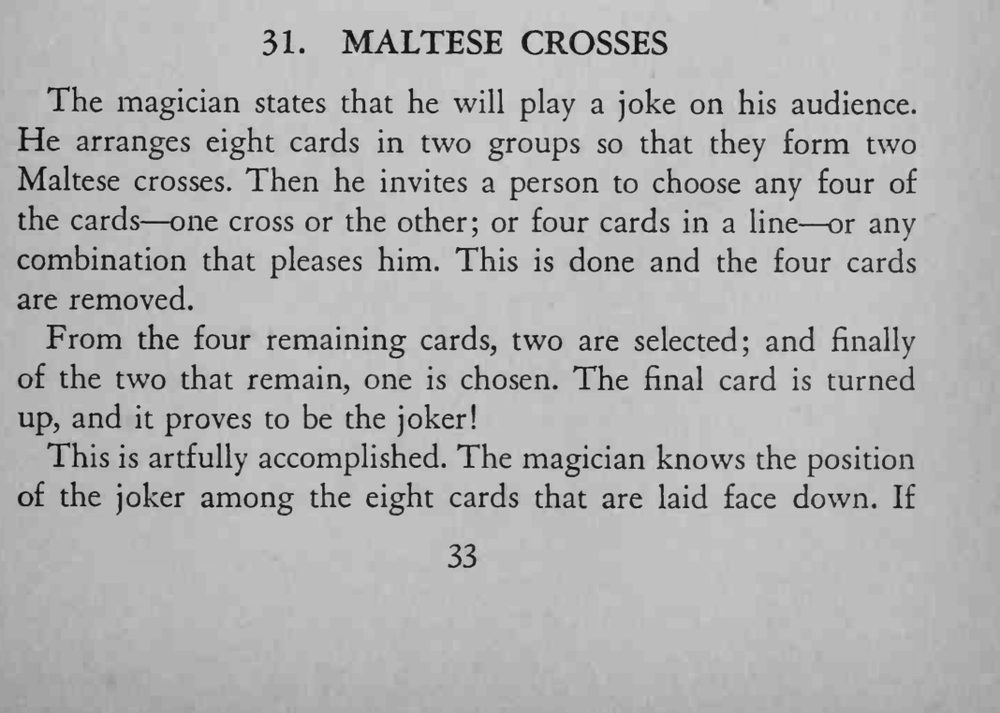
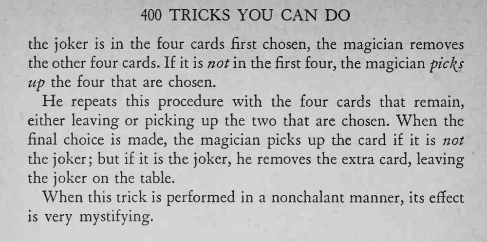

魔术师把八张牌摆成两个马耳他十字，请观众不断挑牌去牌，最后剩下的一张竟然是小丑。
拿牌的动作要随意，像在配合观众的选择，而不是在做手脚。


The magician states that he will play a joke on his audience. He arranges eight cards in two groups so that they form two Maltese crosses. Then he invites a person to choose any four of the cards one cross or the other; or four cards in a line or any combination that pleases him. This is done and the four cards are removed. From the four remaining cards, two are selected; and finally of the two that remain, one is chosen. The final card is turned up, and it proves to be the joker! This is artfully accomplished. The magician knows the position of the joker among the eight cards that are laid face down. If the joker is in the four cards first chosen, the magician removes the other four cards. If it is not in the first four, the magician pic\s up the four that are chosen. He repeats this procedure with the four cards that remain, either leaving or picking up the two that are chosen. When the final choice is made, the magician picks up the card if it is not the joker; but if it is the joker, he removes the extra card, leaving the joker on the table. When this trick is performed in a nonchalant manner, its effect is very mystifying.